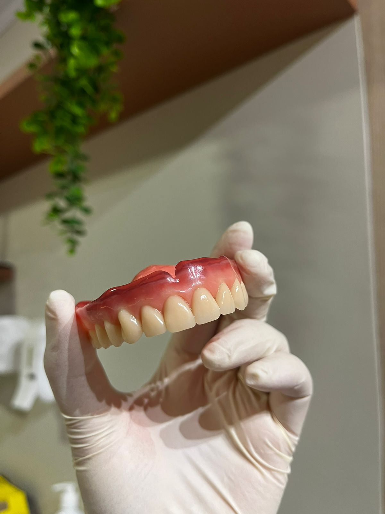
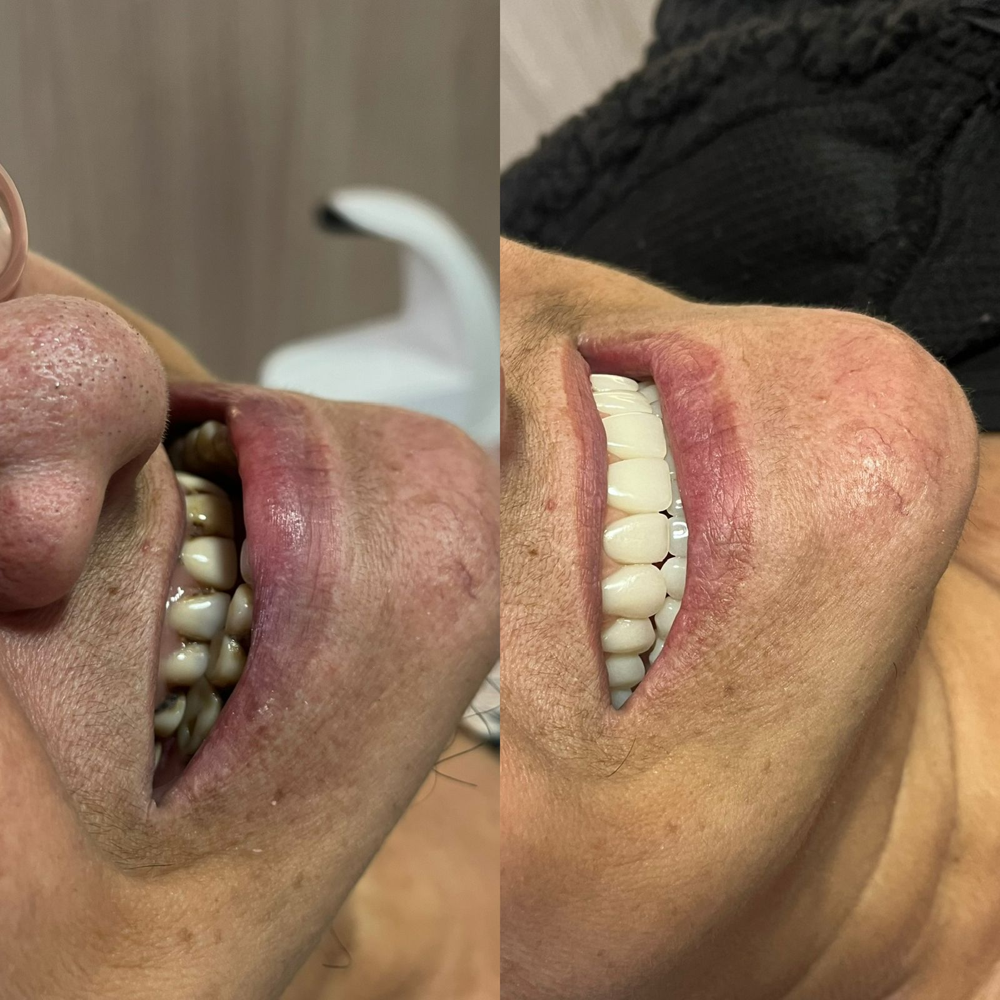
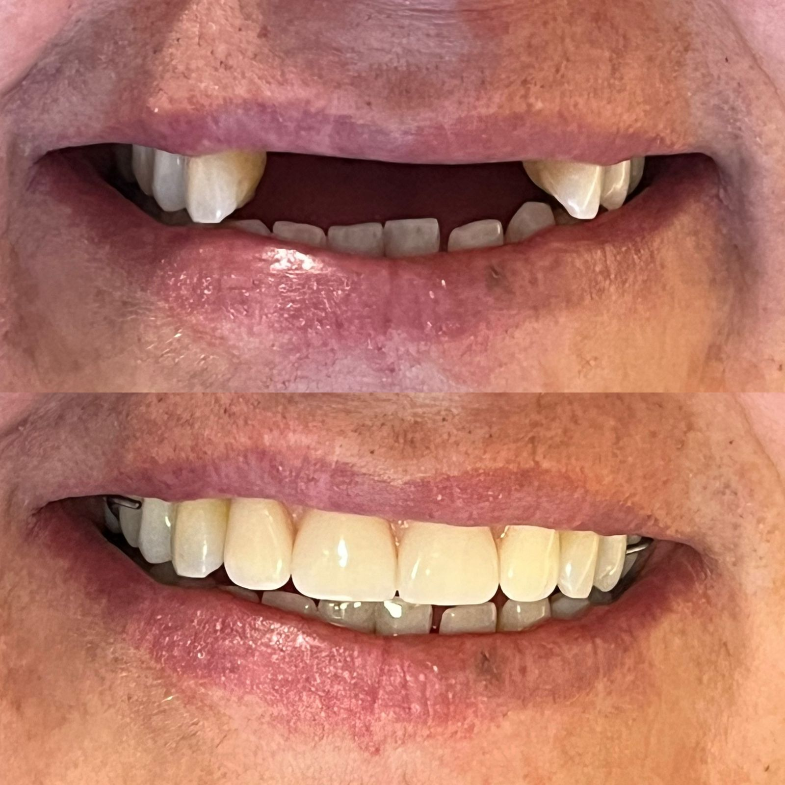
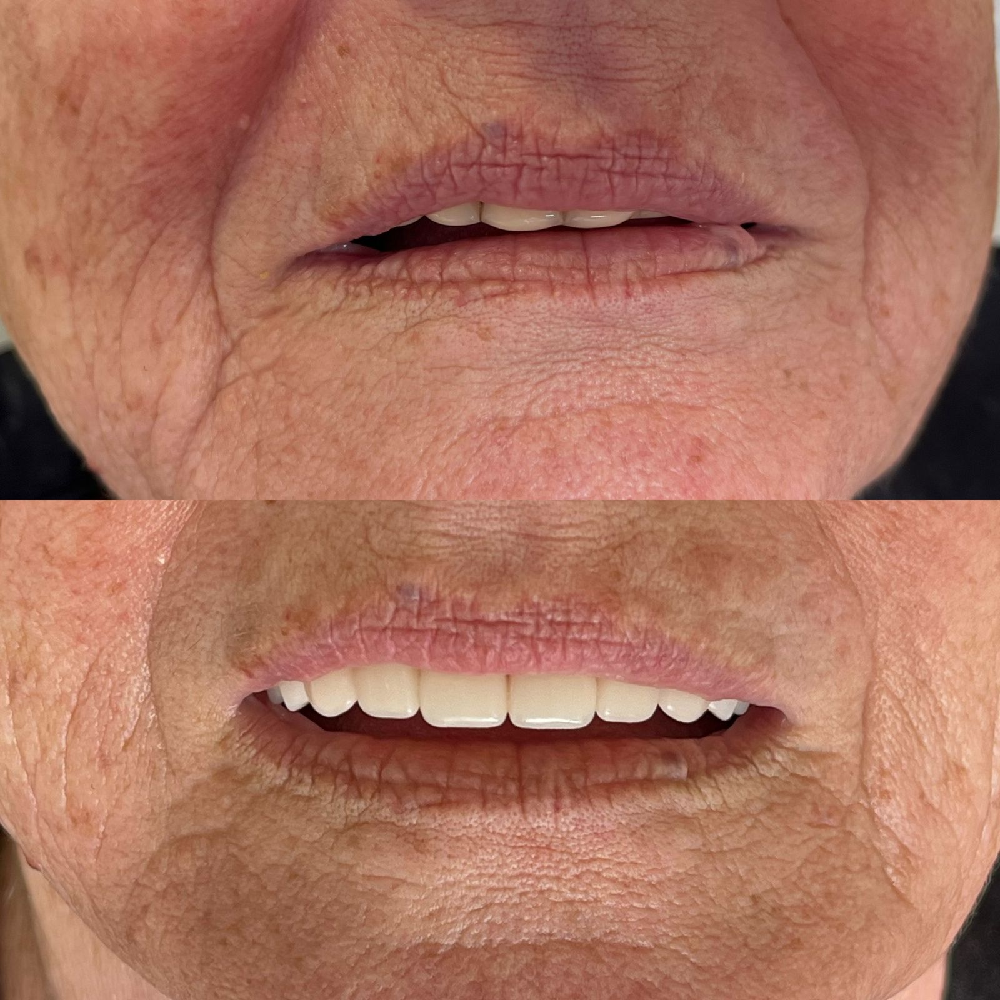

Qualidade de vida em cada detalhe
A perda de dentes afeta muito mais do que a estética; ela prejudica a digestão, o contorno do rosto e a autoestima. A reabilitação com próteses modernas devolve a estrutura necessária para o seu bem-estar diário, sem machucar a gengiva.
Opções personalizadas para você:
- Prótese Total (Dentadura): Ideal para quem perdeu todos os dentes de uma arcada. Confeccionada com materiais de alta qualidade que imitam perfeitamente a gengiva e os dentes naturais.
- Prótese Parcial Removível (Ponte): Substitui falhas isoladas, utilizando estruturas discretas para fixação nos dentes saudáveis que ainda restam.
- Prótese Parcial Removível (Flexível): É uma prótese removível feita de resina, sem o uso de grampos metálicos. Ela substitui dentes perdidos com foco na estética e no conforto.
- Ajuste Perfeito: Realizamos moldagens precisas e provas detalhadas para garantir que a prótese fique firme e não cause desconforto ao falar ou comer.
- Harmonia Facial: Escolha minuciosa da cor e do formato dos dentes para que harmonizem perfeitamente com o seu rosto.
Conheça nossos resultados



